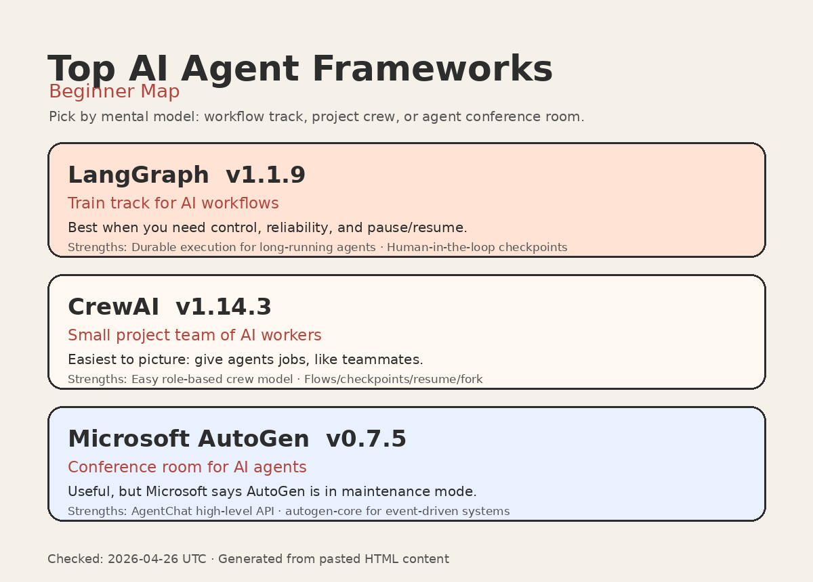

Download files: PNG infographic · SVG infographic · Markdown report · CSV table

| Framework | Latest stable version | Simple analogy | What is new | Strength 1 | Strength 2 | Beginner takeaway |
|---|---|---|---|---|---|---|
| LangGraph | 1.1.9 | Train track for AI workflows | Fixes resume behavior for subgraphs; improves observability/debugging compatibility. | Durable execution for long-running agents | Human-in-the-loop checkpoints | Best when you need control, reliability, and pause/resume. |
| CrewAI | 1.14.3 | Small project team of AI workers | Adds checkpoint lifecycle events, E2B/Daytona sandbox tools, Bedrock V4, checkpoint/fork support, and about 29% faster startup. | Easy role-based crew model | Production workflow features like Flows, checkpoints, resume/fork, CLI, deploy validation | Easiest to picture: give agents jobs, like teammates. |
| Microsoft AutoGen | 0.7.5 | Conference room for AI agents | Fixes for streaming, Redis memory/cache, Anthropic thinking mode, OpenAI GPT-5 reasoning_effort, MCP, GraphFlow, Docker warnings. | AgentChat high-level API | autogen-core path to larger event-driven systems | Useful, but Microsoft says AutoGen is in maintenance mode. |
Checked: 2026-04-26 UTC. Sources are listed in report.md.
{kind=link}
{kind=link}